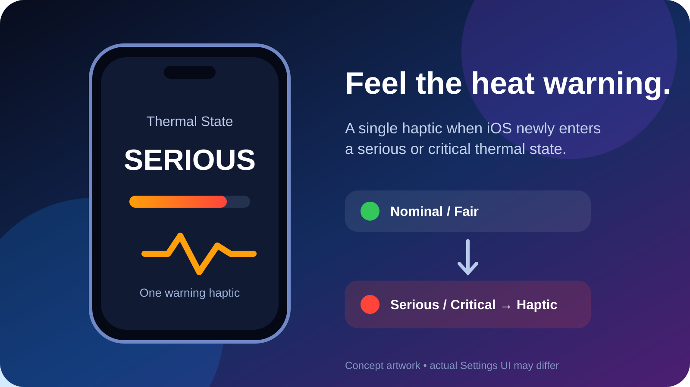
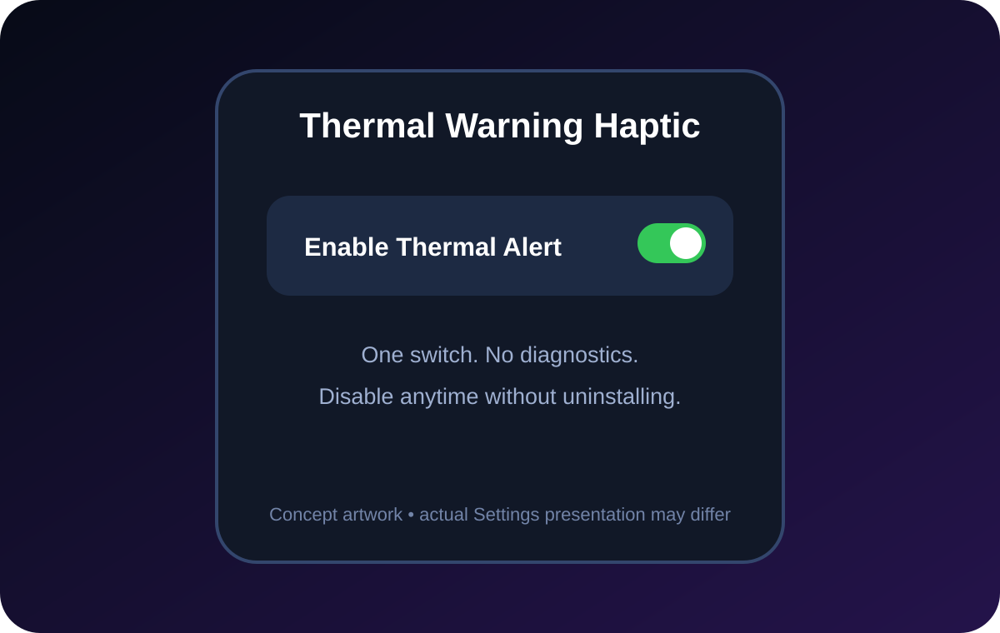

One useful edge alert
Get tactile feedback at the first serious/critical transition without constantly watching battery or temperature indicators.
Feel one warning haptic when iOS newly moves from a normal thermal condition into a serious or critical state.
Build-validated, device test pending. The package compiles and passes deterministic checks, but CI cannot force a real iPhone into serious thermal state. Artwork is conceptual.

This tweak has one job. It listens to Apple’s documented thermal-state change notification and produces a warning haptic only when the state newly crosses from nominal or fair into serious or critical.
Get tactile feedback at the first serious/critical transition without constantly watching battery or temperature indicators.
If the state is already serious and moves to critical, the tweak does not vibrate again.
One Settings switch disables the behavior immediately through the proven CFPreferences/Darwin-notification pattern.

Install only the package matching your jailbreak architecture. Both filenames below are the exact files indexed by the live Next Solution repository.
For RootHide environments using iphoneos-arm64e.
For supported rootless jailbreaks using iphoneos-arm64.
Do not install both variants. Keep Sileo accessible so the tweak can be removed if SpringBoard enters Safe Mode.
Built for iOS 15 and later with primary development against iOS 16.0. The runtime uses Foundation’s NSProcessInfoThermalStateDidChangeNotification, not a guessed private view lifecycle. Build validation confirms both package variants and deterministic decision logic, but delivery of the notification inside SpringBoard still requires physical-device confirmation.
No. It is a jailbreak tweak and requires compatible tweak injection.
ThermalWarningHaptic_1.0.0_RootHide.deb.
ThermalWarningHaptic_1.0.0_Rootless.deb.
No. It only observes the system thermal state and gives a haptic at the transition.
Yes. Turn off Enable Thermal Alert in Settings.
Uninstall Thermal Warning Haptic in Sileo and respring. It does not make permanent system changes.